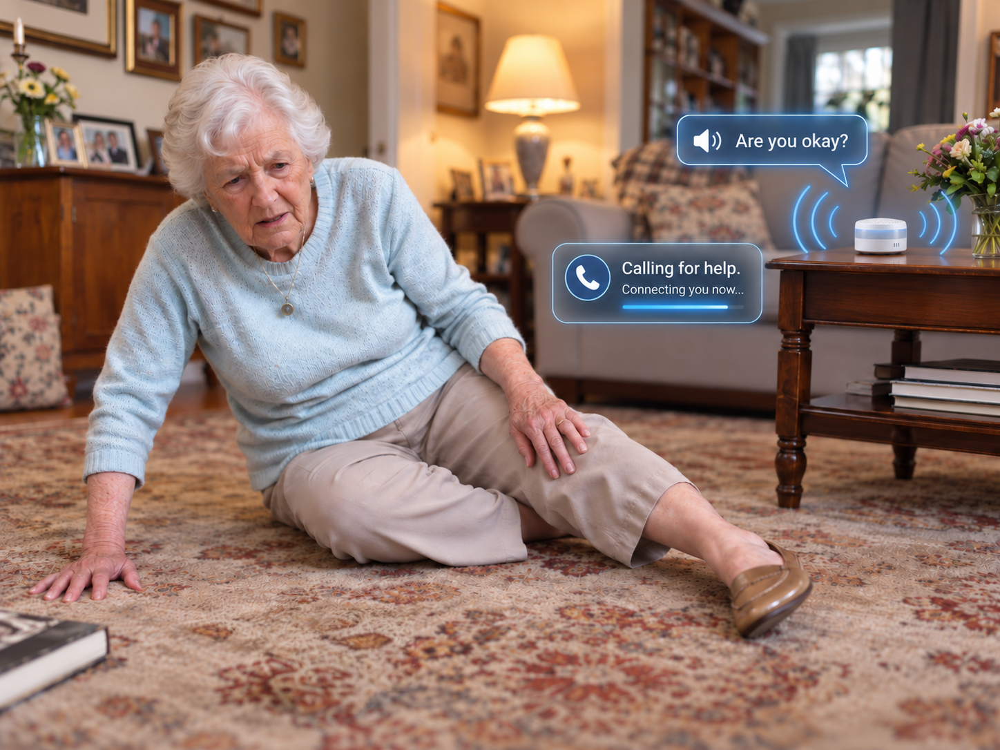

Home / Solutions / TalkAssist
TalkAssist: safety that talks back.
The feature that sets SeniorMatics apart. When an alert triggers, TalkAssist opens a live, two-way voice connection automatically — turning a silent alarm into a real conversation.

Most alerts just beep. Ours starts a conversation.
When a fall is detected, a silent alarm only tells you that something happened. SeniorMatics opens a live, two-way voice connection automatically — so you hear what’s wrong, reassure your loved one, and send help with the full story.
A silent alarm would have sent nothing but a beep.
Watch — and listen — to what happens the moment a fall is detected.
Radar sensed a fall. Opening a live voice connection…
Family was reached in seconds and already knew exactly what happened.
A dramatization of a real, spoken two-way conversation.
One conversation instead of one alarm.
- Live dialogue. Automatically opens a two-way voice connection the moment an alert is triggered.
- One unified system. Integrates your panic buttons, pull cords, and call buttons into a single intelligent network.
- Accurate response. Gathers the critical context before anyone enters the room — improving response and reducing stress.
Take the first step toward smarter, kinder care.
Tell us about your situation and we’ll reach out to talk through a solution that fits — no pressure.